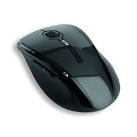

| Menu |
| Monitor |
| Teclado |
| Mouse |
| Gabinete |
| Placa mãe |
| Processador |
| Memória |
| Fonte de Alimentação |
| HD - Disco Rigido |
| Unidade de CD/DVD |
| Placa de Rede |
| Placa de som |
| Placa de vídeo |
| Avaliação |
Mouse

Mouse: É um periférico de entrada de dados. Funciona como um ponteiro na tela que chama-se:cursor. Antigamente o mouse era conectado a uma porta serial, mas hoje em dia já foi praticamente substituído pelas portas USB ou PS/2. O mouse de "bolinha" também está sendo substituído pelo mouse óptico, que além de ter uma precisão maior ainda acumula uma quantidade menor de sujeira; Outra coisa interessante nesses novos modelos é essa roda no meio ( wheel ), que permite a rolagem sobre as páginas.